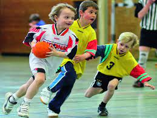

Handebol é um esporte coletivo, praticado em quadras de salão ou na areia, jogado entre duas equipes, em que a bola deve ser conduzida e arremessada somente com as mãos. O objetivo do jogo é marcar mais gols que o adversário. O handebol foi criado em 1919 pelo professor de Educação Física Karl Schelenz em Berlim, capital da Alemanha. No Brasil, chegou pelas mãos dos imigrantes alemães durante a década de 1930. No começo, o esporte se manteve conhecido apenas no estado de São Paulo, e se popularizou para o resto do país a partir da década de 1960.
O handebol ficou restrito a São Paulo até a década de 60, quando o professor francês Augusto Listello, durante um curso internacional em Santos, apresentou a modalidade a professores de outros estados. Esses professores introduziram o esporte em seus colégios e assim o handebol começou a ser praticado em outros estados. Em 1971, o MEC incluiu o handebol entre as modalidades dos Jogos Estudantis e Jogos Universitários Brasileiros (JEB’s e JUB’s). Com isso, o handebol disseminou-se em todo o território nacional, com vários estados dividindo os títulos nacionais. Em 1973, a antiga CBD realizou em Niterói o 1º Campeonato Brasileiro Juvenil para ambos os sexos. No ano seguinte, em Fortaleza, iniciou-se a competição para adultos. Em 1980, um ano após a criação da Confederação Brasileira de Handebol, foi disputada a 1ª Taça Brasil de Clubes, na cidade de São Paulo, então sede da entidade.
Atualmente a modalidade segundo a Confederação Brasileira de Handebol é a mais práticada entre os jovens nas escolas, superando esportes como futebol e basquete. A maioria dos jovens relatam que o esporte é uma oportunidade para que eles possam mudar suas vidas. Hoje em dia a possibilidade de deixar o país e atuar na europa está cada vez mais próxima para esses jovens, países como Portugal e Espanha são os principais destinos para esses atletas, sem contar o sonho e honra de poder representar seu país em alguma competição internacional, como os Jogos Olímpicos, competição na qual o Brasil participou pela primeira vez em 1992 nos Jogos de Barcelona.